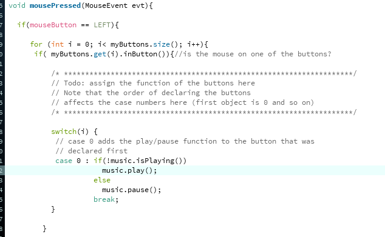

6.810 Engineering Interactive Technologies (fall 2021)
Lab 3: Sending Touch Data to Processing
In this lab, you are going to connect your card to Processing: When you push the physical touch button it will light up the corresponding digital touch button in Processing and the associated song will play.

Steps:
- Install Processing
- Create New Processing Program
- Open Serial Connection in Processing
- Serial Read Data into Processing
- Extract Touch Sensor Information from the String
- Draw Digital Touch Button
- Connect Incoming Touch Signal to Digital Touch Button
- Install Processing Sound Library + Run Skeleton Code
- Implement Digital Music Card
- Integrate Touch Sensing with Music Application
Deliverables
At the end of the lab, upload to your student google drive:
- the Processing code (.pde) you wrote for Serial communication that displays the three touch buttons
- the Processing code (.pde) of the music card application
- a short video (.mov or .mp4, max. 1 minute, 50MB or less) showing how you use the printed music card, i.e. touch the buttons with your finger to play/pause a song and go to the previous/next song
Help us Improve Class Materials for Lab3:
Please let us know if you had any trouble with the circuit or programming or if anything was confusing in the write up.
You can add your comments here.
Make sure everything from last lab is still working
Before getting started with the new content, let's first make sure everything from last lab is still working. Connect your printed music card to the ESP32 microcontroller and the ESP to your computer via the USB cable. Upload the Arduino program that you wrote in the last lab. Check that when touching one of the touch buttons you see the touch signal printed on the Arduino Serial monitor. If you see this, you are ready to start today's lab.
(1) Install Processing
Since Arduino has no libraries for graphical user interfaces, we will send our touch signals to a program called Processing that can render our music card and the touch buttons on the screen. Processing is a user interface protoyping platform that is based on Java. It was created by MIT students (and others) in their spare time in 2001 and is nowadays used by thousands of makers and UI designers.
Install Processing: You can download and install Processing using the link here.
Getting Started Tutorials: Processing has useful minitutorials with code snippets that you can find here.
Processing API: You can find all available classes and functions here in the Processing API.
(2) Create New Processing Program
Create New Processing Program: Open Processing and create a new program.
setup() and draw() functions: Similar to Arduino, every Processing program has two functions: one that is executed only once when you run the script called setup(), and another function that loops forever called draw(). Create both functions in your empty Processing file.
void setup() { // runs only once
}
void draw() { //runs infinitely
}
(3) Open Serial Connection in Processing
In the last lab, we wrote a program that sends our touch signals from the ESP microcontroller through the Serial port (USB cable) to our computer. We had then used the Serial Monitor in the Arduino Programming environment to look at the touch signals coming through the Serial port. However, since any program can read from the Serial port, we are not dependent on Arduino, and can also use Processing to read the data and do something interesting with it.
Import Serial Library: Import the Serial library at the top of your Processing file.
import processing.serial.*;
Open Serial Connection: Next, let's define the serial connection in the setup() function we just created. To open the serial connection, you need to create a new port that can be used for communication by creating an object from this class:
Serial myPort;
To create the port, you need to define three things:
- which
application will listen to the port (i.e. this one)
- which
portname to use (same as you selected in the Arduino menu when you clicked Tools -> Port)
- which
baudrate is expected to be able to decode the messages (same as you defined in your Arduino .ino code)
myPort = new Serial(this, String portName, int baudrate);
portName: For the portName, you can get a list of all available ports from the Serial library. By accessing different buckets of the list, you can get access to the name of each port. The correct port is the one you also used in your Arduino program, i.e. this is where the microcontroller is connected to your laptop. Check if the correct portname is in bucket 0, 1, or 2 by printing it and then use the bucket as the parameter in the Serial constructor.
// check which port you use: 0, 1, 2?
String portName = Serial.list()[0];
print(portName);
baudrate: For the baudrate, you already know this from your Arduino program that you uploaded to the microcontroller. Check in your Arduino program with which baudrate you initialized the Serial communication and then use it as the parameter in the Serial constructor. If you use a different baudrate than you wrote into the Arduino program, you will only get a lot of random stuff back since your Processing application will not know how to 'translate' the messages that are coming from the microcontroller since it would 'speak' at a different frequency than the Processing application would 'listen'.
Now that the port is defined, your program can listen to it and check if data is available.
(4) Serial Read Data into Processing
Now that we have the port defined, we can see if data is available and if the answer is yes, we can read the data from the port.
Reading Serial Data into a String: Below, we provide some starter code for you to read the Serial data into a string. Add the lines to your draw() function so they are executed continuously:
// we are sending data in the format: (sensor ID),(is_touched); (4 characters)
// (sensor ID) is either 0, 1 or 2 and represents the ID of the observed touch sensor
// (is_touched) is either 0 or 1 (0 if the sensor is not touched, and 1 if it is touched)
// If there is a message with at least 4 characters
if (myPort.available() >= 4) {
// read a String until the character ';' is found, which indicates the end of our message
String val = myPort.readStringUntil(';');
}
Let's go into more detail what this code is doing:
Check if Serial messages are available:
First, you have to check if the ESP microcontroller has sent something. You can do that with the function myPort.available(), which returns how many characters are available on the Serial stack. Remember that you formatted the touch signals with two numbers and two other character, e.g., 0,1;. These are 4 characters. Thus, you want to process the signal only if at least 4 characters got send over Serial.
Reading Serial messages:
Serial messages can be read into Processing with the function myPort.readStringUntil(). This function reads in all characters until a stop symbol you can define is found, and then converts the individual characters into a string. In the code above, we defined the stop signal to be a semicolon (;) since we had formatted all Serial message in lab 2 to end with one.
Print Received Strings: Next, print the received String values to the Processing command line using the print() function.
Testing if you Receive Data: Before you run your Processing program, check one more time that your printed touch button is wired to the ESP and the ESP is connected to your computer. Check that the ESP is actually on and running its microcontroller program. Once you confirmed this, run your Processing program, and touch your touch sensor to see if the statements you printed to Serial port are getting printed on the Processing command line. If you are getting a ‘port busy’ error, make sure you close the Serial Monitor in the Arduino IDE. Only one program can read from the Serial port at a time, so if the Arduino Serial Monitor reads from the Serial Port it will not be possible for Processing to get access to the data as well.
(5) Extract Touch Sensor Information from the String
What we are currently printing to the command line are Strings in the format of 0,1; (sensor_ID,is_touched;). However, to do something useful with this data in our code, we have to split it into individual values, i.e. the sensor_ID and and if the sensor is touched/not touched.
String split() function: Use the String split() function to split your String into individual values. You can find information on split() and how to use it in the Java String reference. Once you have both the sensor_ID and is_touched separated, we recommend you check that this is working by printing them to the command line before moving on.
(6) Draw a Digital Touch Button
In the next step, we want to create a touch button (i.e., a circle) that is gray if the touch sensor is touched and red if the touch sensor is not touched. Let's start with a single button for touch sensor #1 and you can extend this script later.
Set Size of GUI window: When a new Processing window is created, it has a default size. However, for our purposes we need a larger window. Use the size() function to set the size of the window to 500px x 500px. You can find more information about size() here in the Processing reference.
Create a button/circle: Create a button (i.e., a circle) with a width of 100px and a height of 100px. You can find useful information on how to do this here in the ellipse reference and the ellipseMode reference.
Color the circle: Color the circle in a color of your choice. You can find more information about this in the fill() reference. If you also want to color the background as well you can find out about this in the background() reference.
Once you are done it should look like this:
(7) Connect Incoming Touch Signal to On-Screen Touch Button
Next, we will connect the color of the circle to the incoming touch signal for touch button #1.
A gray circle shows that the touch button is not touched.
A red circle shows that the touch button is being touched.
Identifying if Incoming Touch Signal is for Touch Button 1: Use a String comparison to find out which data belongs to touch button #1. Remember you cannot use stringVariable == "StringValue". Instead you need to use equals(). Check the reference here for equals(). If you plan to use a boolean in Processing, the datatype is spelled out boolean myVariable; not bool like in Arduino.
Redrawing the Circle: When you add or modify a shape in Processing, the old shape will not disappear but remain in the Processing window. Use background(255); or any other color you like to erase all content in your window and let the new circles be redrawn everytime the draw() function is executed.
Once you are done, it should look like in the image above (without the text).
Extend Visualization to 3x Touch Buttons Once you have the first touch button done, extend the user interface to have a circle for all three touch sensors. It should look like the image below .
Test Touching Multiple Buttons Simultaneously: Touching multiple touch sensors simultaenously also works with the code you have. This should be a bit surprising to you, since we can only read one message at a time in the draw() function. The reason it still works is that we are reading messages at such a high speed that the processing gap is not visible to the human eye.
(8) Install Processing Sound Library + Run Skeleton Code
Now that you have basic touch input working in Processing, you can connect it to our music player application.
Install Processing Sound Library: Before you can use Processing to play music, you need to install the Processing Sound Library. In Processing, go to Sketch -> Import Library -> Add Library. Then in the Libraries tab, search for sound and install the one that is officially from Processing (see image below).


Run Skeleton Code: Once you have the library installed, download our music card skeleton code from here. Inside the folder, open and run the music_card_nosolution.pde, it will take a little while to load until you see the music card image in the view because we also load the mp3 audio files for the songs, which takes some time. You should see the music card being loaded into your application as shown below. If you don't see it, please let us know.
(9) Implement Digital Music Card
Let's implement the digital music card. When we press the notes on the screen they should have the following functionality:
Music Card Functionality:
left note: previous songmiddle note: play/pauseright note: next song
Convert On-Screen Notes into Buttons: To convert the notes on screen into buttons, we already implemented a class Buttons for you. You can make a new button with:
myButtons.add(new Button(x_top_left, y_top_left, x_bottom_right, y_bottom_right, drawing-mode));
Please add your buttons to line 49 onwards. One of the buttons is already defined there:
myButtons.add(new Button(360, 180, 440, 260, "Ellipse")); //line 49
Your final result should look like this:
Create Button Press Events: To create events on mouse click, we need to implement several mousePressed() events. We already did this for you in the code further down in the class.

We first iterate over all the buttons you created and then depending on the button ID, we execute a music function. We created a music class that loads several example songs in your project folder and has the functions:
music.play();
music.pause();
music.back();
music.forward();
You can see in the switch/case code that we already assigned the middle button to play/pause music. Extend the code to also go to the next and previous songs. To test your code, click onto each note and see if the expected music playing functionality is executed.
Hide the Touch Buttons: While we want to have a touch button on each note, we don't want to see the white ellipses since they make the card look less good. We already prepared a piece of code for this for you: Press the 'h' key (hide) on your keyboard while your program runs.
It will hide the buttons but you can still click on them. If you want to see them again, press the 's' key (show). Study the code to see where this was implemented and how we did it.
(10) Integrate Touch Sensing with Music Application
Now that we have the user interface that we can control digitally and we tested that everything works by clicking onto each note to play/pause and go to previous/next song, we also want to play some music from the physical card.
Add Previous Touch Bar Code to Music Application: You already implemented the Serial communication and the message decoding in the previous exercise, i.e. the Processing application you wrote for displaying the touch bars that go up and down. Add this code to the music card program and instead of increasing the height of your bar you are now calling the music functions.
Test Physical Card: Once you have finished the code, try if it works by touching the notes of your printed music card to play/pause the song and go to the next/previous song. Remember to not interact on the silver side but to touch on the side of the visual design.
Deliverables
At the end of the lab, upload to your student google drive:
- the Processing code (.pde) you wrote for Serial communication that displays the three touch buttons
- the Processing code (.pde) of the music card application
- a short video (.mov or .mp4, max. 1 minute, 50MB or less) showing how you use the printed music card, i.e. touch the buttons with your finger to play/pause a song and go to the previous/next song
Please let us know if you had any trouble with the circuit or programming or if anything was confusing in the write up.
You can add your comments here.
application will listen to the port (i.e. this one)portname to use (same as you selected in the Arduino menu when you clicked Tools -> Port)baudrate is expected to be able to decode the messages (same as you defined in your Arduino .ino code)left note: previous songmiddle note: play/pauseright note: next song